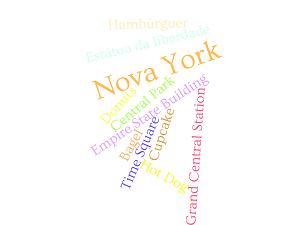

Nova York

Introdução |
Informações |
Localização |
Multimédia |
Home
Introdução
Nova York é a cidade mais populosa dos Estados Unidos, localizado no Nordeste e com uma das mais populosas áreas metropolitanas do mundo. É também ela que abriga a sede da Organização das Nações Unidas, sendo assim um importante local para assuntos internacionais e por muitos considerada como a capital cultural do mundo.
🌇🌳🌭🍔😄
Nova York é conhecida pelos ceus grandes edifícios e parques, mas também pelos seus famosos hot dogs e Hambúrgueres. É um local fantástico de se visitar!
Clique aqui para obter mais informações sobre Nova York;
Clique aqui para ver pontos de interesse em Nova York;
Clique aqui para localizar Nova York;
Clique aqui para voltar ao inicio.
